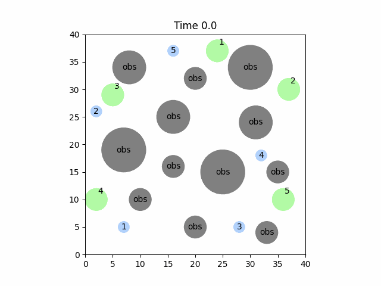
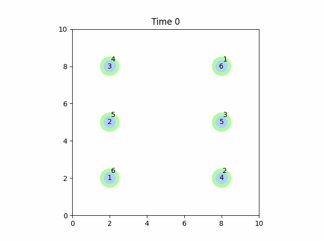
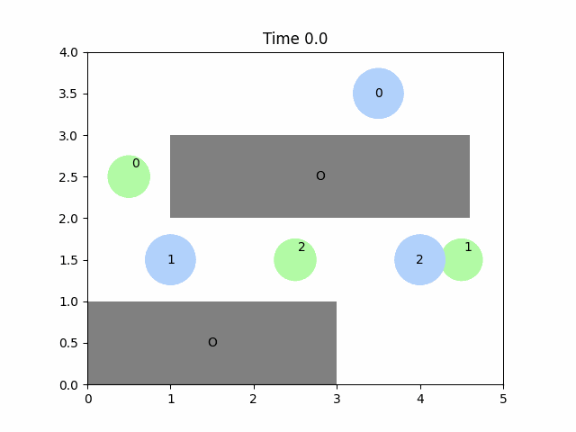
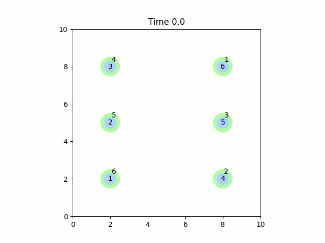
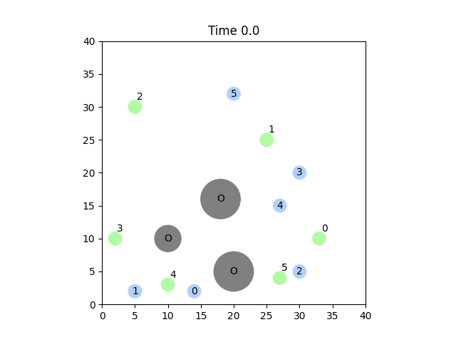
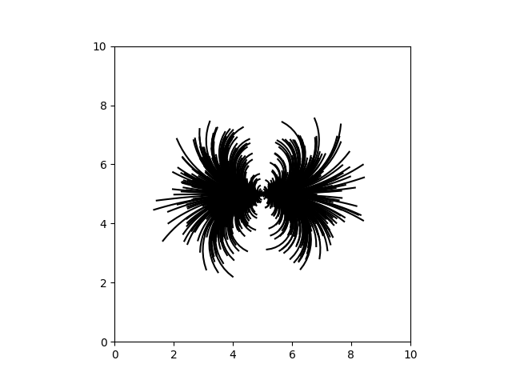
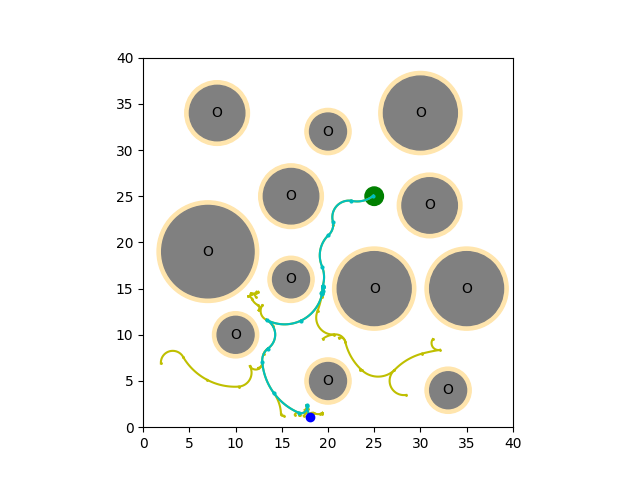

Efficient Multi-Robot Motion Planning with Precomputed Translation-Invariant Edge Bundles
Abstract
Solving multi-robot motion planning (MRMP) requires generating collision-free kinodynamically feasible trajectories for multiple interacting robots. We introduce Kinodynamic Translation-Invariant Edge Bundles or KiTE-Extend, a planner-agnostic action selection mechanism for sampling-based kinodynamic motion planning. KiTE-Extend uses a library of trajectory segments computed offline to guide action selection during online planning, improving the ability of existing planners to identify feasible motion segments without altering state propagation, collision checking, or cost evaluation, and without changing their theoretical guarantees. While KiTE-Extend can modestly improve single-agent planners, its benefits are most clear in the multi-agent setting, where it is able to explore more effectively and significantly improve planning through the dense spatiotemporal constraints introduced by robot-robot interaction. Through experiments on multiple kinodynamic systems and environments, we show that KiTE-Extend reduces planning time and improves scalability across the three most common MRMP paradigms: centralized, prioritized, and conflict-based.
Results

cRRT+KiTE: Five unicycle robots, centralized joint-state planning with edge bundles.

KCBS+KiTE: Five unicycle robots coordinated via conflict-based search.

pRRT+KiTE: Six second-order car robots with prioritized planning.

KCBS+KiTE: Second-order car robots navigating a narrow corridor.

KCBS+KiTE: Six second-order car robots with conflict-based search.

pRRT+KiTE: Six unicycle robots with prioritized planning and KiTE-Extend.
Supplementary Videos
pRRT vs pRRT+KiTE: 30 Second-Order Cars in Swap environment.
KCBS vs KCBS+KiTE: 30 Second-Order Cars in Large Cluttered environment.
KCBS+KiTE: 30 Double Integrators in 3D Large Cluttered environment.
Method Overview
KiTE-Extend is built around a library of short, dynamically feasible motion segments called edge bundles, generated offline and reused during planning. Each edge corresponds to rolling out the system dynamics under a constant control input for a finite duration, producing a short trajectory segment and its terminal state. For translation-invariant systems, edges are generated from origin start states, allowing the same library to be reused across the workspace independent of the environment geometry.
During online planning, KiTE-Extend replaces naive random control sampling with a ranked retrieval from the edge bundle. Given an expansion state and a sampled target, it retrieves and ranks candidate motions by proximity to the target, then re-propagates and validates them under the current spatiotemporal constraints. If no candidate succeeds, KiTE-Extend falls back to the baseline random extension to preserve exploration.
KiTE-Extend integrates into three representative MRMP paradigms—centralized (cRRT), prioritized (pRRT), and conflict-based search (KCBS)—without modifying the underlying planner's dynamics, collision model, or theoretical guarantees.

Translation-invariant edge bundle for a unicycle robot. Each edge is a short, dynamically feasible trajectory segment generated from the workspace origin.

RRT search tree guided by edge bundle expansions. KiTE-Extend biases tree growth toward sampled targets using precomputed motions.
Paper
BibTeX
@article{kiteextend2025,
title={Efficient Multi-Robot Motion Planning with Precomputed Translation-Invariant Edge Bundles},
author={Anonymous},
year={2025}
}